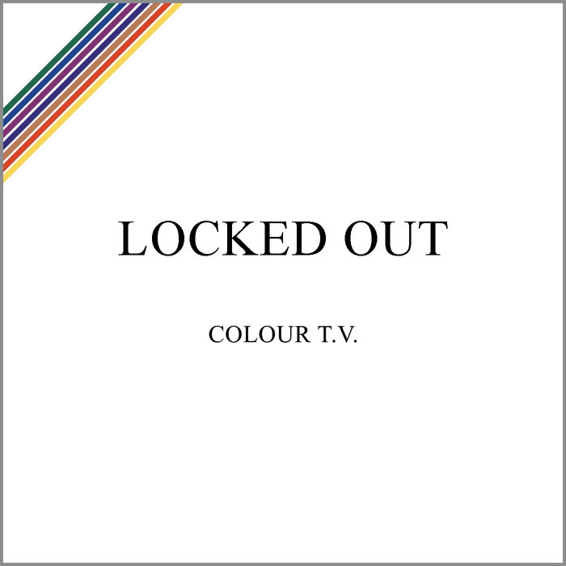
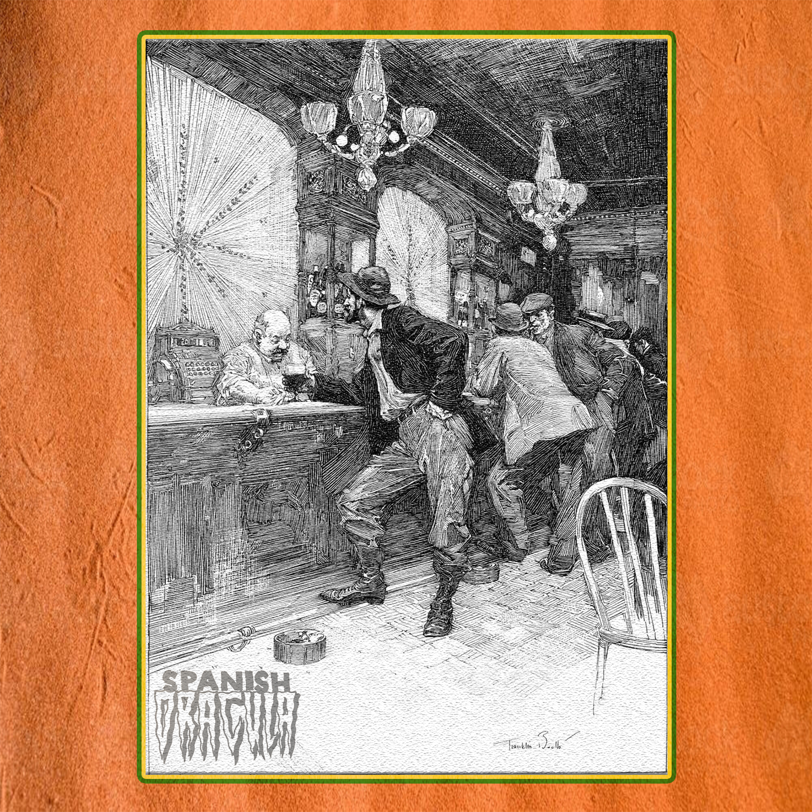

Audio Examples
Below are some audio examples of my work in various musical projects. Each entry includes a brief description and an audio player to listen to the track.

Colour T.V. - "Locked Out"
Colour T.V. was an alternative group out of Sussex County, NJ. I previously played with 2/3rd's of the group in a different project called "Young American Artists". I designed the album artwork in the style of JD Salinger's paperback covers.

Datura - "Crossed"
Datura was a post-rock band formed while attending the School of Visual Arts. I played bass and did background vocals. Datura was a frequent presence at the now defunct bar Don Hills in the Bowery district of New York City. I left the group in 2009 to focus on working in the theatre company, Dangerous Ground Productions.

Spanish Dracula - "Paint Me a Picture"
Spanish Dracula was the brain child of my brother, Christopher. After being impressed with an earlier project of mine (the punk rock group Aguirre) he invited me to sing and write in this alternative / grunge quartet. We played frequently over the NY area, and released three EP's before falling victim to the COVID pandemic, when some members moved out of state.

Old Man is Me - "Buffalo Skinners"
Old Man is Me reunited me with my former bandmate Paul Alan (of Aguirre and Colour T.V.) with a focus on blues and folk music. Recording started in as early as 2020. The video below was edited utilizing public domain footage, and is an alternative arrangement of the folk standard "Buffalo Skinners" first performed by Leadbelly in the 1900s, and popularized by Pete Seeger during the folk revival of the early 1960s.